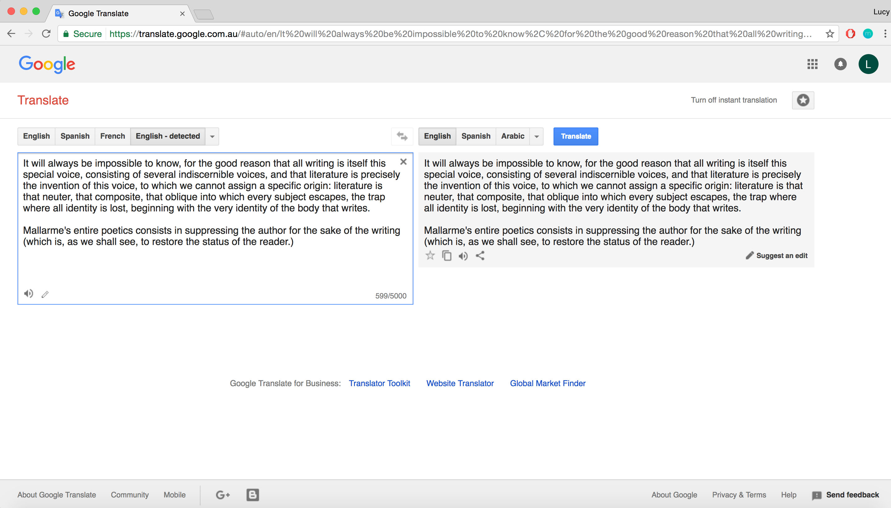
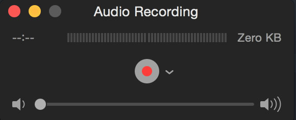
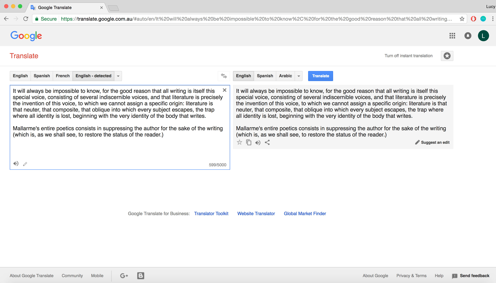
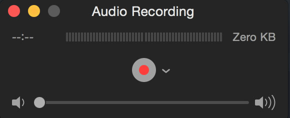

I picked the text 'Death of the Author' by Roland Barthes. In his essay, Barthes argues against the method of reading and criticism that relies on aspects of the author's identity their political views, historical context, religion, ethnicity, psychology, or other biographical or personal attributes to distill meaning from the author's work.
I looked at this idea of the author not being a necessity and no longer needing an identity. I reposted a section of the text into google translate to explore the ideas of anonymous authors and their identities being lost so having a computer repeat the text back it gives a sense of the death of the author. I then published the recording onto sound cloud where the public have access to and can comments their thoughts on the recording.
 


